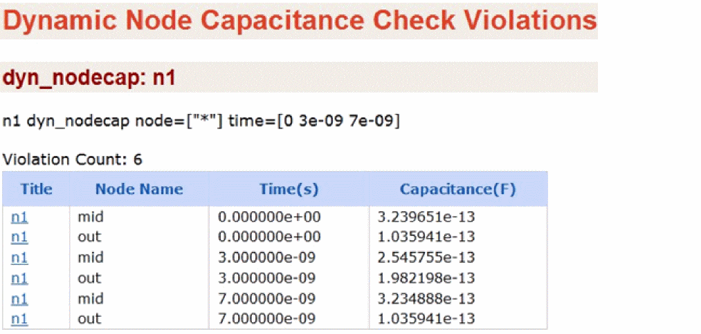

Dynamic Node Capacitance Check (dyn_nodecap )
Spectre Syntax
title dyn_nodecap <node=[node1 node2...]> <time=[t1 t2...]> <inst=[inst1 inst2...]> <xinst=[xinst1 xinst2...]> <subckt=[subckt1 subckt2....]> <xsubckt=[xsubckt1 xsubckt2....]> <fanout=all|gate|bulk> <depth=n> error_limit=<value><intrinsic_cap_merge=no|yes>
SPICE Syntax
.cck title dyn_nodecap <node=[node1 node2...]> <time=[t1 t2...]> <inst=[inst1 inst2...]> <xinst=[xinst1 xinst2...]> <subckt=[subckt1 subckt2....]> <xsubckt=[xsubckt1 xsubckt2....]> <fanout=all|gate|bulk> <depth=n> error_limit=<value><intrinsic_cap_merge=no|yes>
Description
Reports the node capacitance at the specified time (time) of a transient simulation. Device capacitances, voltage dependent capacitances, grounded and coupling caps are combined into one value. The results are written to a file with the extension dynamic.xml, which can be viewed using a Web browser.
Arguments
Example
n1 dyn_nodecap node=[*] time=[0 3n 7n]
This example reports the node capacitance for all nodes at times 0, 3ns and 7ns.
The following is an example report displayed in the Web browser.

Related Topics
Return to top